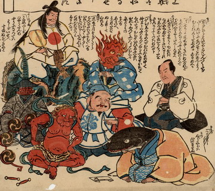

鯰が鹿島大明神や火事・親父・雷・大黒・浅草寺五重塔に対して謝っている。鯰は波の柄が入った青い着物と黄色い羽織を身にまとい、座って頭を下げ、両手をつき、文書を差し出している。袖から覗く手は人間のものである。
出典：親書誌：U426_nichibunken_0193：差出し申御詫一札之事；サシダシモウスオワビイッサツノコト／日付：2010／資源識別子：U426_nichibunken_0193_0001_0000
Copyright (c)2010- International Research Center for Japanese Studies, Kyoto, Japan. All rights reserved.